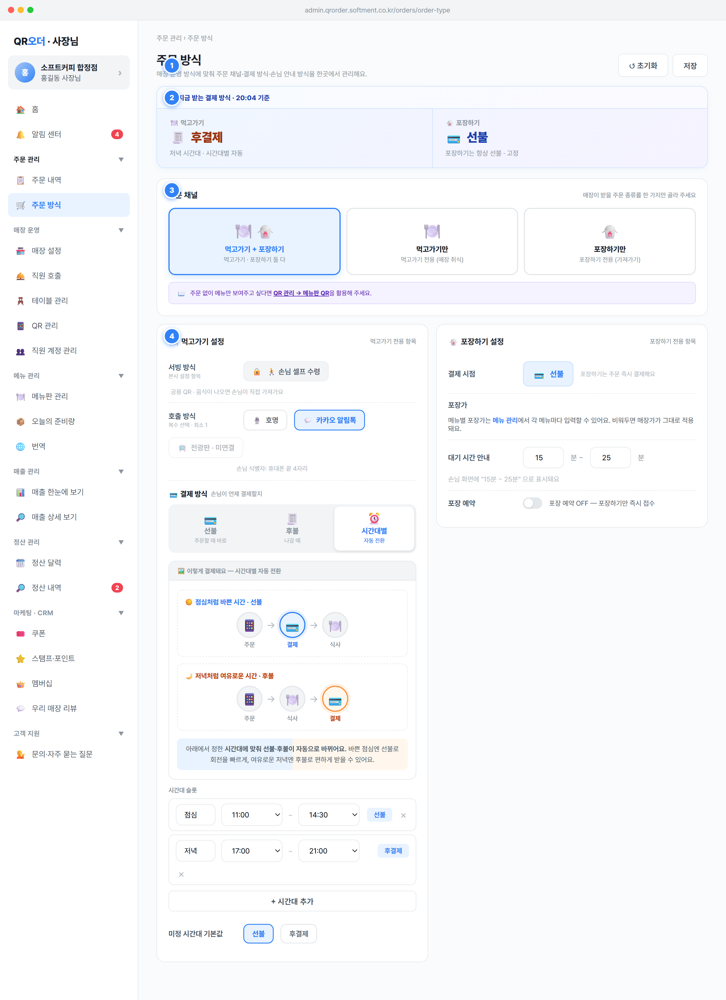

OrderChannelConfig·PaymentSchedule)은 저장 즉시 손님 주문 화면·QR 관리·매출 집계에 영향을 주므로, 변경을 명시적 저장으로만 확정하는 안전장치 역할을 해요.saveOrderType()): 검증 통과 시 현재 ORDER_CHANNELS 전체를 ORDER_SAVED 스냅샷으로 확정하고 success 토스트 "주문 방식 설정을 저장했어요" 노출. 변경(dirty)이 있을 때만 버튼이 강조 상태(btn-save-cta pulse)가 되고, 변경이 없으면 일반(btn-ghost) 상태예요.resetOrderType()): dirty가 아니면 "변경된 내용이 없어요." 안내 후 종료. dirty면 확인 후 마지막 저장 스냅샷(ORDER_SAVED)으로 모든 필드(중첩 schedule 포함)를 깊은 복사로 되돌려요.ORDER_SAVED = JSON.stringify(ORDER_CHANNELS) 스냅샷을 잡고, 현재 상태와 다르면 dirty=true(ot_isDirty()) — SPEC §2.8.ot_isDirty()가 true면 미저장 가드가 작동해 확인 prompt를 띄워요 — SPEC §2.8("변경 사항을 버리고 이동할까요?"). order-type은 전용 저장 UI를 쓰므로 공통 자동저장 배너 대상에서는 제외되고 이 dirty 가드에만 포함돼요.OrderChannelConfig(매장별 1개, PK store_id) 전체 + PaymentSchedule 목록 — DATA_MODEL §5.1/§5.2.PUT /stores/{storeId}/order-channel-config (config + schedule 슬롯 일괄 upsert), 성공 시 updated_at 갱신.ORDER_SAVED) vs 현재(ORDER_CHANNELS) 전체 JSON 동등 비교.updated_at)은 기록해요.owner만 가능. staff는 이 화면을 열람만 하고 [저장]·[초기화]·모든 입력이 비활성 — SPEC §1.6(주문 방식은 매장 마스터 설정)..ot-pay-summary).hhmm은 렌더 시점 현재 시각.ot_currentPolicy() 결과로 결제 라벨(선불=💳 / 후불=🧾)과 적용 범위(scope)를 표시. payment=prepay→"선불·고정 정책", postpay→"후불·고정 정책", scheduled→현재 시각이 속한 슬롯명+"시간대"(예 "점심 시간대")이며 끝에 "· 시간대별 자동" 부기.defaultPolicy를 적용하고 scope를 "미정 시간대 기본값"으로 표시.mode에 따름: both면 두 카드(2단 그리드 .two), dine_in이면 먹고가기 카드만, takeout이면 포장하기 카드만.OrderChannelConfig.mode, .payment, .defaultPolicy, PaymentSchedule[].{name,start,end,policy} — DATA_MODEL §5.1/§5.2.ot_currentPolicy()): mode가 takeout 전용이면 무조건 선불/포장 전용; prepay·postpay면 고정 라벨; scheduled면 schedule.find(s => HH:MM >= s.start && HH:MM <= s.end), 없으면 defaultPolicy.ORDER_CHANNELS 기준으로 즉시 미리보기되지만, 실제 손님 적용은 저장 후예요(핀1)..panel 첫 번째). 카드 3종: [먹고가기 + 포장하기], [먹고가기만], [포장하기만].confirmOrderModeChange(k)): 같은 채널이면 무시. 다르면 변경 전 안내 모달을 띄워요 — STATES §6.1.applyOrderModeChange(m)로 mode 변경(아직 미저장). 모달 안내 "여기서 바꿔도 아래 저장 버튼을 눌러야 최종 반영돼요. 저장 전엔 손님 화면이 바뀌지 않아요."sel 강조. 패널 하단 보조 안내: "주문 없이 메뉴만 보여주고 싶다면 QR 관리 → 메뉴판 QR을 활용해 주세요." (메뉴판만 모드는 이 화면이 아닌 QR 관리에서 분리 관리).OrderChannelConfig.mode enum(both/dine_in/takeout), NN — DATA_MODEL §5.1.mode에 따라 테이블 QR 활성(먹고가기 포함 시)·포장 QR 활성(isTakeoutQRActive(), 포장 포함 시) 자동 갱신 → QR 관리 화면이 이를 따라가요.ORDER_LABELS.mode): both="먹고가기 + 포장하기", dine_in="먹고가기만", takeout="포장하기만". 아이콘: both 🍽️🥡 / dine_in 🍽️ / takeout 🥡.willDineOff=현재 매장 포함 && 목표 takeout, willTakeOff=현재 포장 포함 && 목표 dine_in.status='accepted' && reservation_accepted_at IS NULL)이 있으면 저장 차단 + "포장 예약 N건을 먼저 수락/거절해 주세요" — STATES §6.3.owner만. staff는 카드가 비활성 — SPEC §1.6..ot-channel-grid). 먹고가기 패널(서빙 방식·호출 방식·결제 방식)과 포장하기 패널(결제 시점·포장가 안내·대기 시간·포장 예약 토글)로 구성돼요.toggleOrderNotif(k)로 ON/OFF. 전광판은 미연결 상태라 비활성("📺 전광판 · 미연결"), 클릭 시 alertDisplayNotConnected(). 선택 1개 이상이면 보조 "손님 식별자: 휴대폰 끝 4자리".setOrderPayment(k)로 단일 선택. 선택값에 따라 흐름 예시(otPayExample)가 바뀌어요.toggleOrderSlotPolicy(i)][× 삭제]. [+ 시간대 추가](addOrderSlot(), 기본 14:30~17:00·선불). 추가로 "미정 시간대 기본값" [선불][후불] 선택(setOrderDefaultPolicy).updateOrderWaitMin/Max) → "손님 화면에 'N분 ~ M분'으로 표시돼요"; 포장 예약 토글(toggleOrderField('reservation')) ON 시 "손님이 수령 시간 선택, 사장님 수락 후 접수", 안내 "손님이 수령 시간을 선택하면 사장님이 수락해야 확정돼요. (영업 종료 30분 전 자동 마감)".Payment.status='paid' 여부로 갈려요. paid면 환불 발생(결제 취소), 아니면 주문 취소 — 후불이라도 결제 완료 후 손님이 돌아와 환불하면 결제 취소예요 — STATES §1·§2·§3.service enum(self/served, 시스템 결정), notifications jsonb(셀프+먹고가기일 때만, 최소 1), payment enum(prepay/postpay/scheduled), defaultPolicy enum, reservation bool — DATA_MODEL §5.1.wait_minutes 안내는 min/max 두 값(waitMinMin/waitMinMax), number 1~999, 손님 화면에 범위로 노출. (스펙 권장 범위 5~70·5분 간격 — DATA_MODEL §5.1).PaymentSchedule(scheduled 전용): name(≤20)·start_time·end_time·policy(prepay/postpay)·sort_order. 시간 옵션은 10분 단위 24h(timeOptions10) — DATA_MODEL §5.2.reservation_slot_minutes(default 30), reservation_block_before_close_minutes(default 30, 영업 종료 N분 전 슬롯 차단) — DATA_MODEL §5.1. 예약 주문은 Order.pickup_time·reservation_accepted_at로 추적 — DATA_MODEL §4.Math.max(1, …)), 비숫자는 0 방지. min>max 같은 역전 입력은 저장 전 보정/안내 권장.owner만. staff 열람 시 입력 비활성 — SPEC §1.6.